40W CO2 Laser Cutter/Engraver pics and mods
I recently picked up a 40W CO2 laser cutter/engraver on ebay. They're getting quite cheap, to the point that you couldn't get the critical parts to build your own for the cost of a complete unit. I purchased this unit for ~$600 shipped on ebay, though some with fewer options can be had for just over $400 shipped. Like most "Cheap Chinese" stuff, this unit isn't perfect, so I used it as a base, and began to make modifications and upgrades to increase safety, lifetime, performance, functionality, etc. Surprisingly, it was pretty close to "plug and play" for functionality... just needing to make a few minor adjustments from things knocked around in shipping.
This emits a 10.6um laser beam, which is way outside the visible range, which makes it both safer, and more dangerous than high power visible lasers. Safer, because it is easily absorbed and protected against by many transparent materials like glass, polycarbonate, acrylic, etc. (easy to operate with just basic safety glasses, rather than wavelength specific laser glasses like necessary with visible lasers)... but more dangerous because you can't see the beam, which means you can start fires, burn yourself, etc. without knowing.
Here's the unit set up on the workbench in my garage.
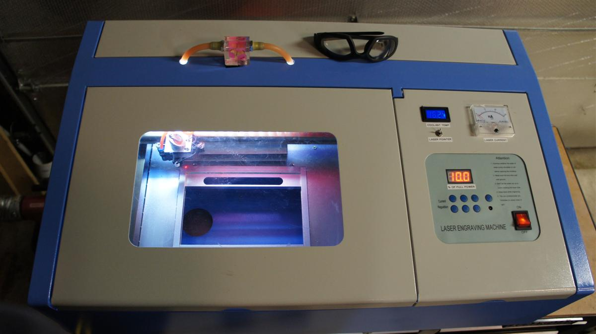
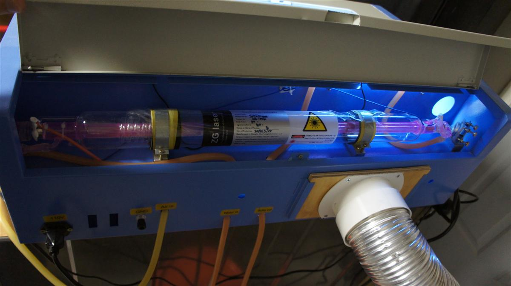
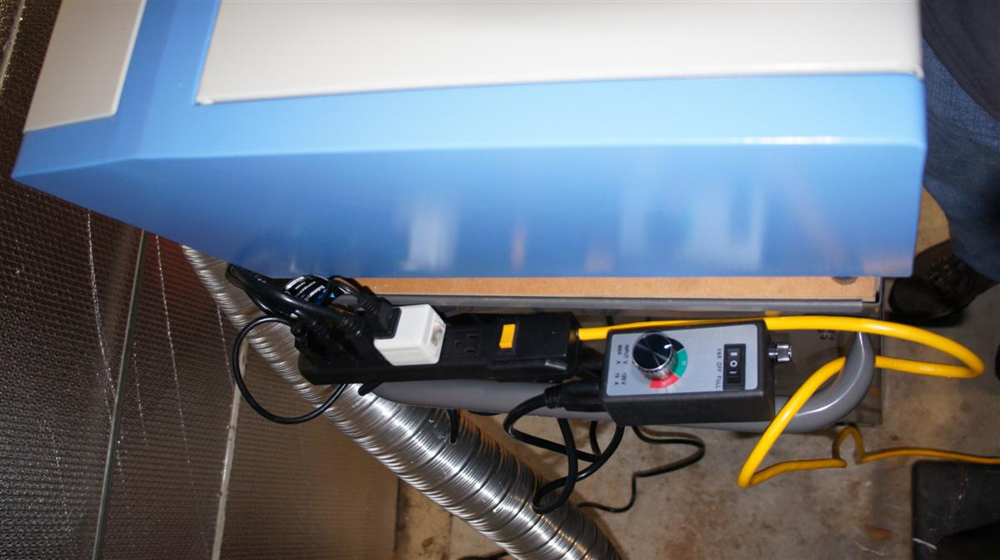
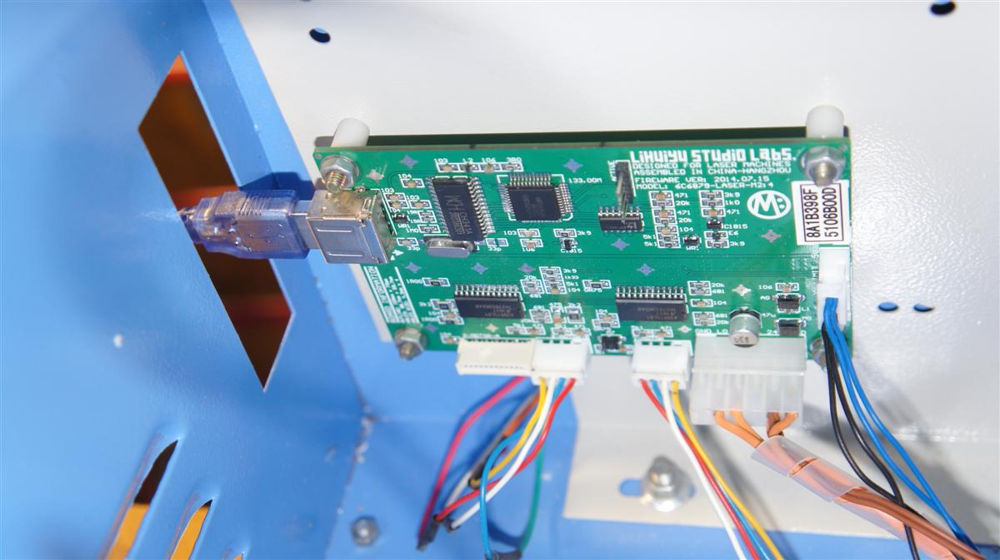
I made a few upgrades to the control panel. I added an analog ammeter, since the digital readout tells just a power percentage, with no feedback, or even a cross reference of what nominal output corresponds to what percentage. It's recommended to run these tubes at 12mA-15mA for maximum life, so I didn't want to burn out the tube by unknowingly overdriving it. It turns out that my unit runs about 15mA @ 50%, and maxes out at about 22mA. With the ammeter, I'll also notice if the current begins to drop off, that the laser tube may be starting to fail.
I also added a switch for the laser pointer, since sometimes it's annoying trying to look at the work piece with a bright red dot on it. Lastly, I added the coolant temperature readout (see the coolant temp. mod below). The LCD was difficult to read from my viewing angle, so I replaced the polarizers to give a more suitable viewing angle (and inverted, which I think looks cooler).

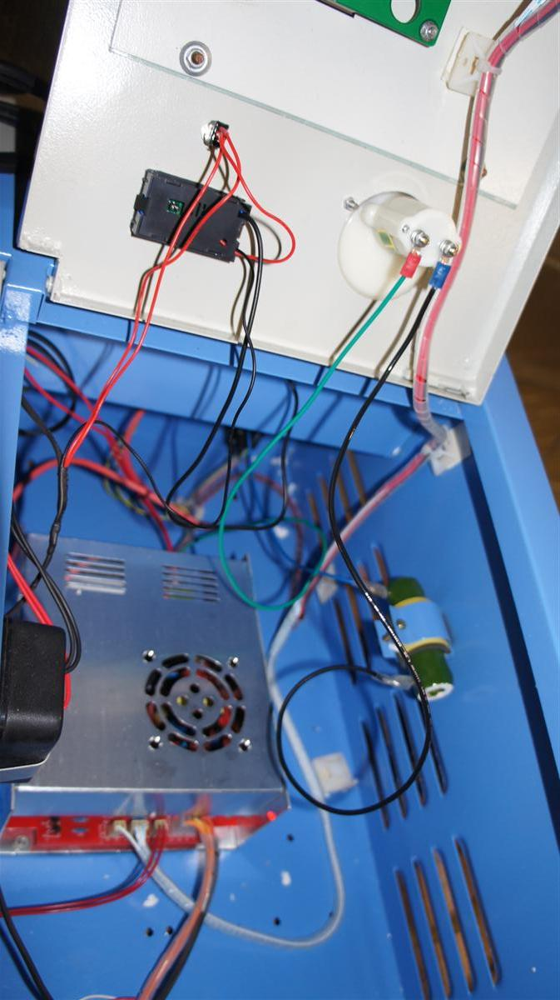
While the unit came with a laser pointer, it was just a single pointer, which isn't in the beam path, so only points at the same place as the CO2 laser at one point. Several people have done upgrades to add two laser line pointers, which has the intersection always aligned with the CO2 laser... but my biggest problem was that I never knew exactly where the focal point of the CO2 laser was. I don't really care where the laser is going to hit if it's not focused, so instead of laser lines, I used two laser dots, and when they're overlapped, the laser to workpiece distance is correct, and the overlapping laser dots is where the CO2 laser will hit.
I designed the laser bracket to work with cheap 6mm laser modules, 3D printed it, and uploaded the model to Thingiverse
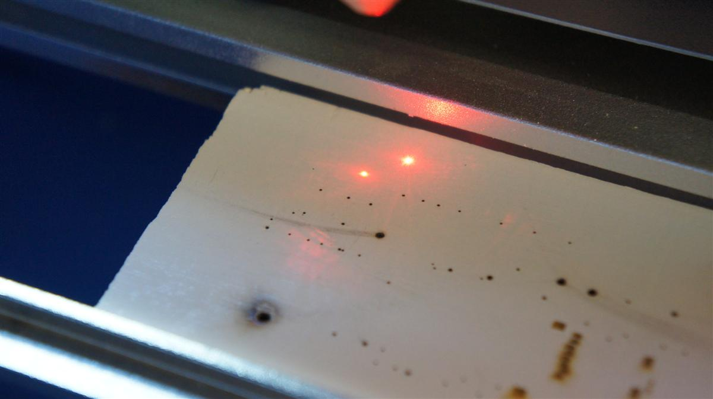
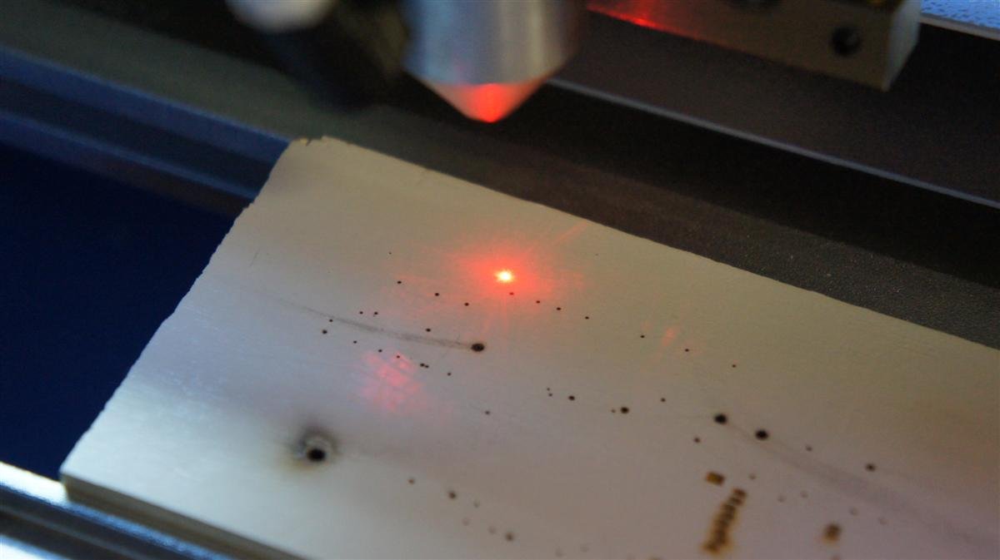
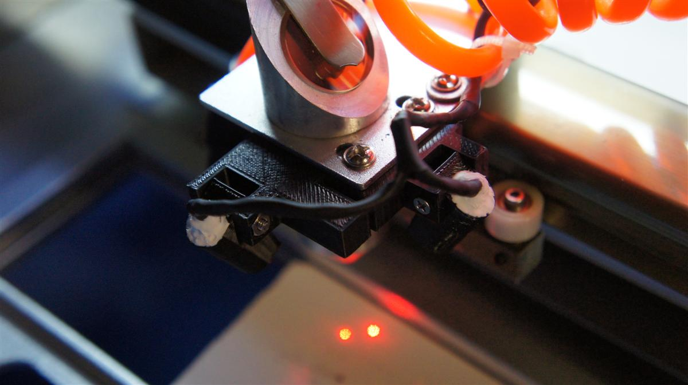
The biggest safety issue I had with this machine is that it'd still run the laser, even with the lid open. That's kinda dangerous, even for me, so I added a simple lever microswitch, which I screwed to the side, and added a 3D printed hat to make contact with the lid. I wired it into the power supply 'D' input, which originally had a short jumper wire connecting it. When the switch is closed, it connects the pins, and everything works normally... when the switch is opened, the laser is disabled.
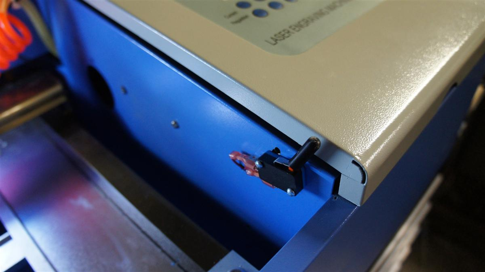
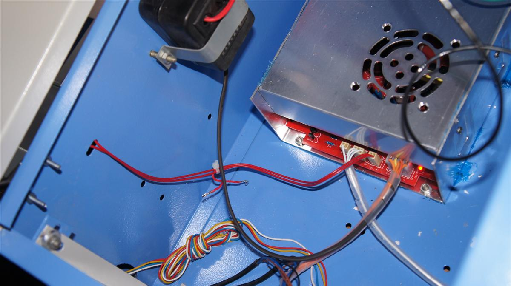
I purchased the laser with "air assist", which included a small airbrush air compressor, as well as the coiled air hose and the air assist nozzle on the cutting head. This helps blow the smoke out of the cutting path, helps the lens stay clean, and helps keep the work piece from catching fire.
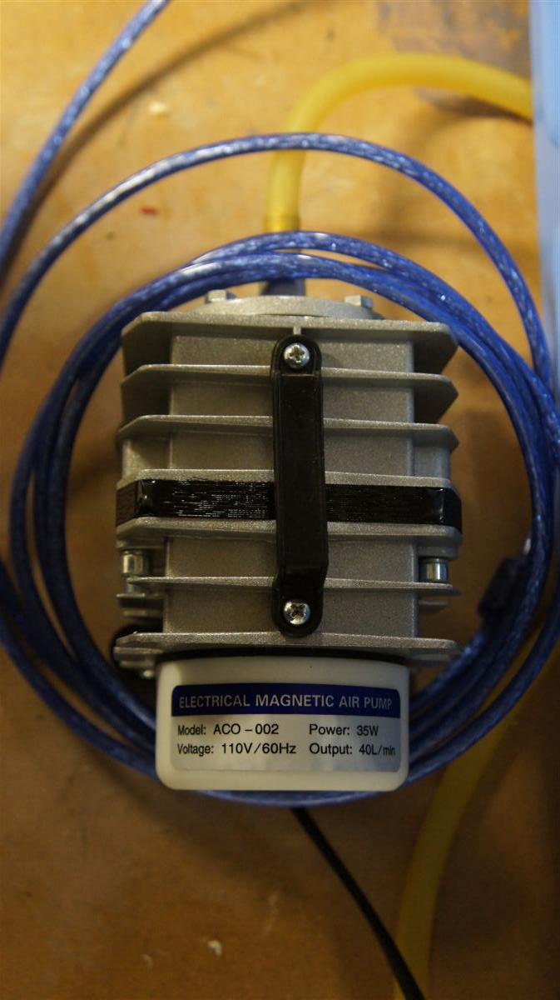
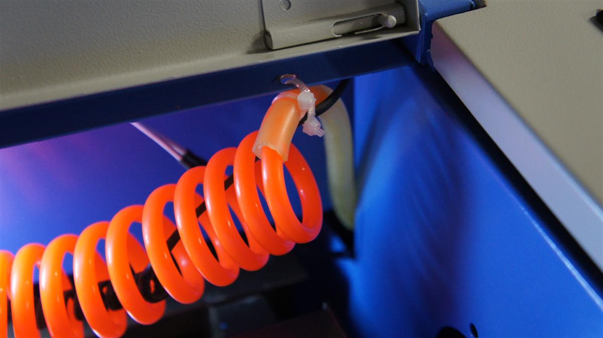
Since cutting and engraving is burning the material, a lot of smoke and fumes are generated. You need to get rid of these, though the fan that originally came with the unit was way underpowered, and a poor fit. So I purchased a dust collector from Harbor Freight, which moves PLENTY of air, and hooked it to some semi-rigid 4" aluminum ducting (which is much less restrictive than the the cheap flexible dryer hose), and vented it out a 4" hole that I had previously made in my man door in the garage. Unfortunately, it is REALLY loud, and pulls more air than necessary for a lot of materials... so I grabbed this speed controller for it. The original fan blocked the laser access door as well, so I cut a new plywood adapter plate, and attached the hose with a 4" connector.
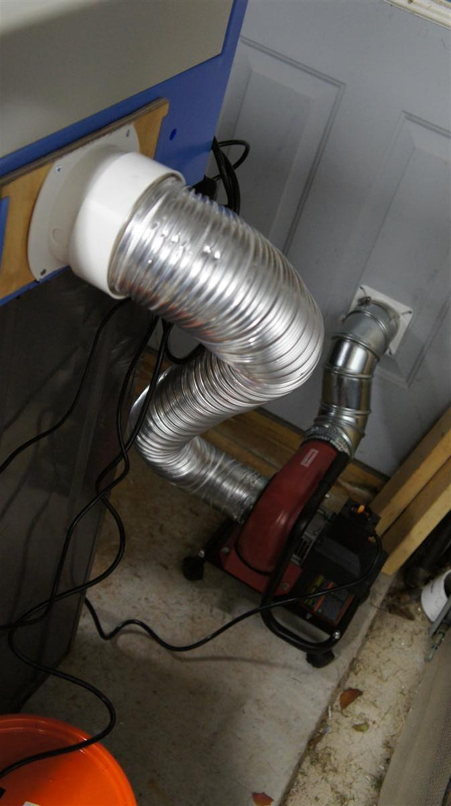
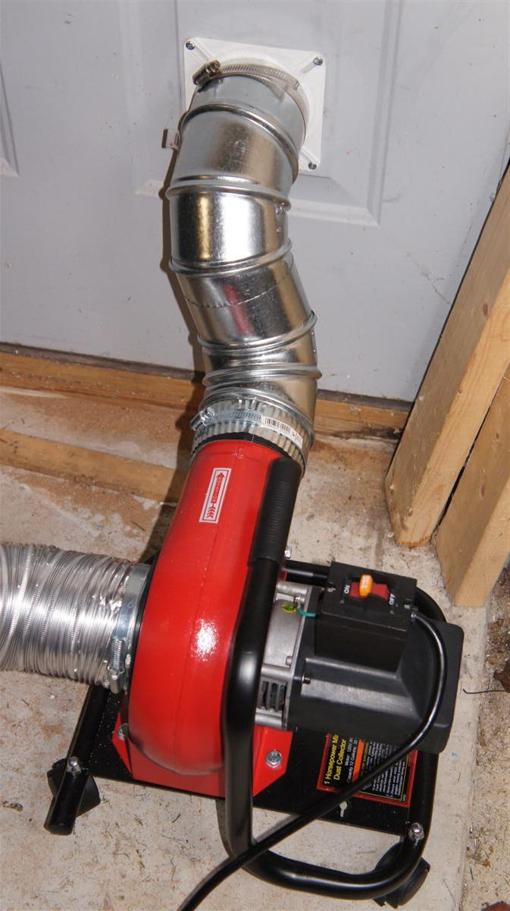
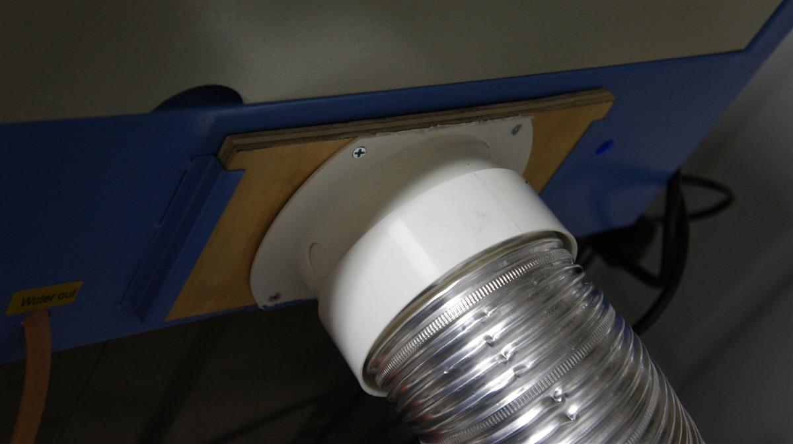
I upgraded all of the original rubber hose to 1/4" ID latex hose. The original rubber hose would kink easily, and was permanently defored at several places, restricting flow. Also, several of my other upgrades had larger ports, which the rubber hoses wouldn't stretch to. Latex hoses stretch extremely well, are very durable, and resist kinking at bends.
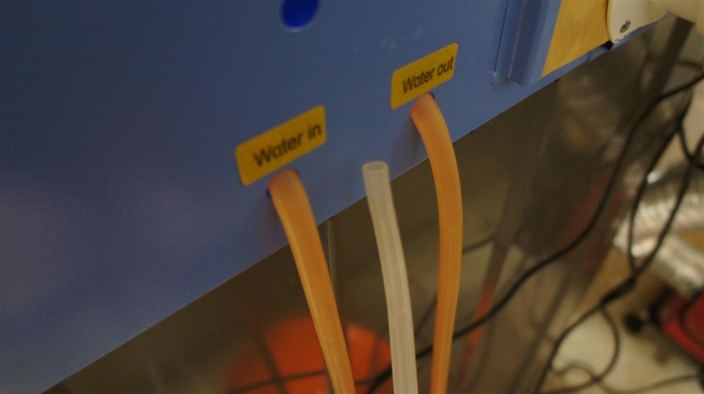
The original aquarium pump claimed to pump ~200 GPH, which of course is the maximum unrestricted flow (and probably a highly inflated value), but my initial measurements showed it was pushing about 12 GPH (and it wouldn't pump all the air bubbles out of the laser tube). After replacing the rubber hoses with latex hoses, I got about 20 GPH, and was pushing enough to get the bubbles out of the tube. But I figured more flow is better (within reason), so I upgraded to a larger water pump. This one claims to do 620 GPH, though in my setup, I'm getting about 45 GPH. One recommendation - this pump comes with a filter. I thought "I don't need a filter, but it can't hurt, just in case a bug gets in the water or something" - WRONG. The filter is a cheap stringy foam material, and pieces of it break off... once I noticed, it took about a half hour to flush all the pieces of the filter out of the hoses and laser tube. >_<
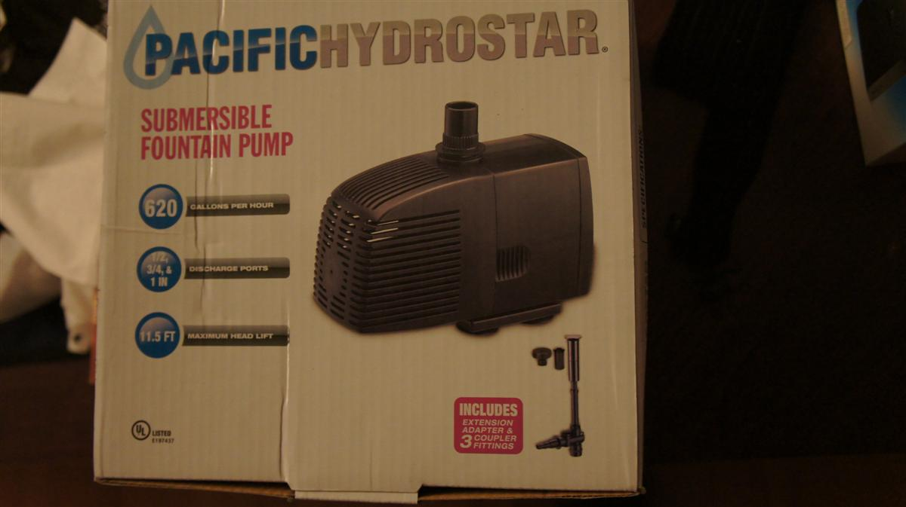
I needed a way to know that the water pump was still running, so initially, I left the hose just out of the water, so I could hear the water running. That was fine, until the hose flopped out of the bucket and poured a gallon of water on the floor before I noticed. Also, every time I turned it off, the water would drain and introduce air into the system. So I decided to get a simple flow meter, which just visibly spins when the water is flowing (I wanted a digital flow sensor, but didn't think it was worth the cost). This also incorporates a water temperature sensor, so you can make sure your water isn't getting too hot (I have this connected immediately after the laser tube).
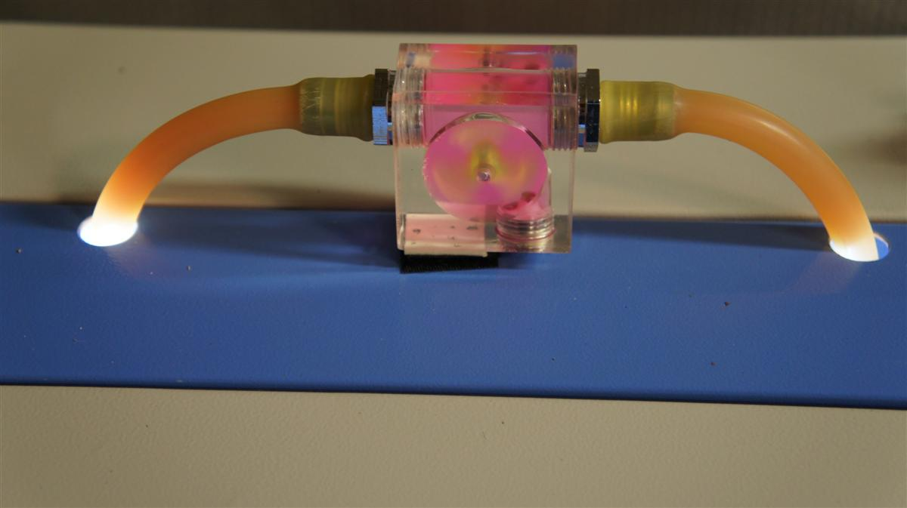
Since winter is coming, and I have this set up in my (attached, but not climate controlled) garage, I grabbed a few gallons of Splash RV & Marine Antifreeze from Advance Auto Parts to use as coolant.
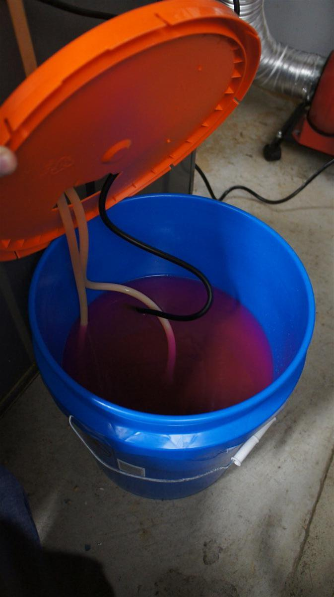
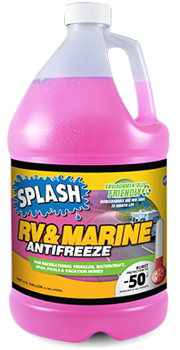
This is a Propylene Glycol product, which is much safer than Ethylene Glycol (standard car antifreeze, which is extremely toxic to animals and humans). It's pre-diluted, so you want to use it full strength... but it's cheap (~$4 per gallon) so it won't break the bank. This stuff gives burst protection down to -50F, though it looks like the freeze point is around +9F (when it begins to turn into a slush). By becoming slushy, it prevents cracking the laser tube... though it's no longer liquid enough for the pump, so you can't actually use the laser. It rarely gets into the single digits here, and if my garage is +9F, I probably won't be laser cutting anything anyway. ;-)
After the upgrades, I had a few leftovers... the original water pump and exhaust fan (plus the original hoses). They were underperformers, and easily replaced. In the case of the exhaust fan, I had added some foam weatherstipping to try to get more productive airflow, but the fan is just really weak.
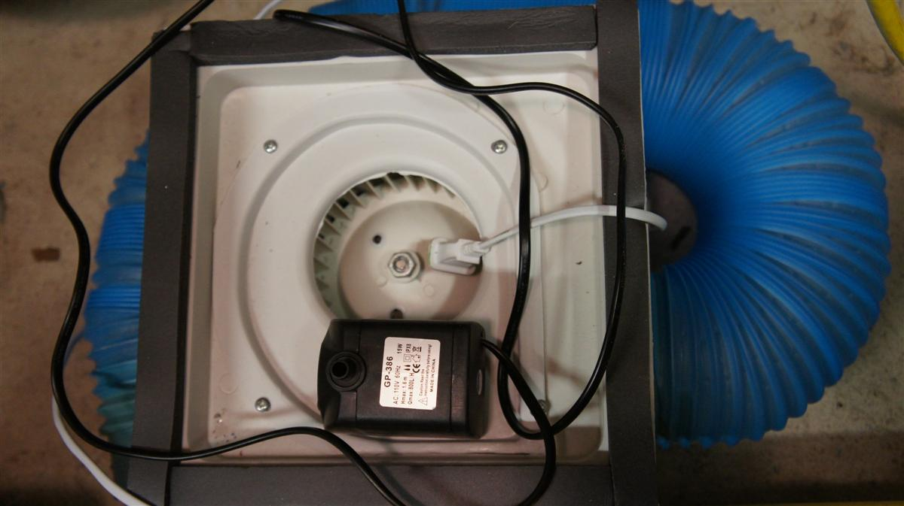